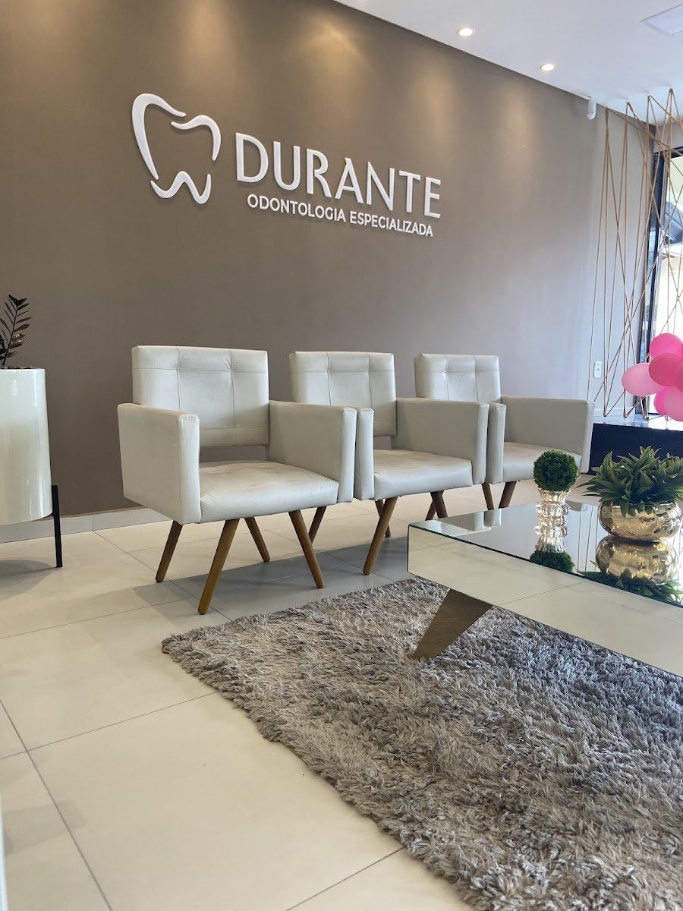
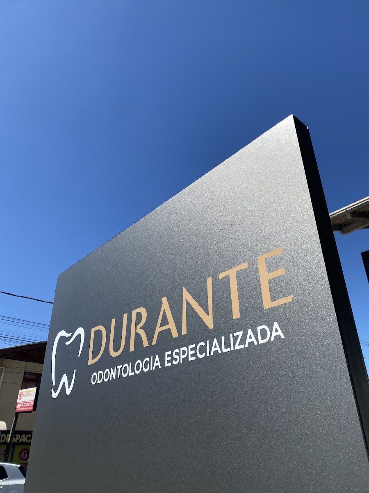
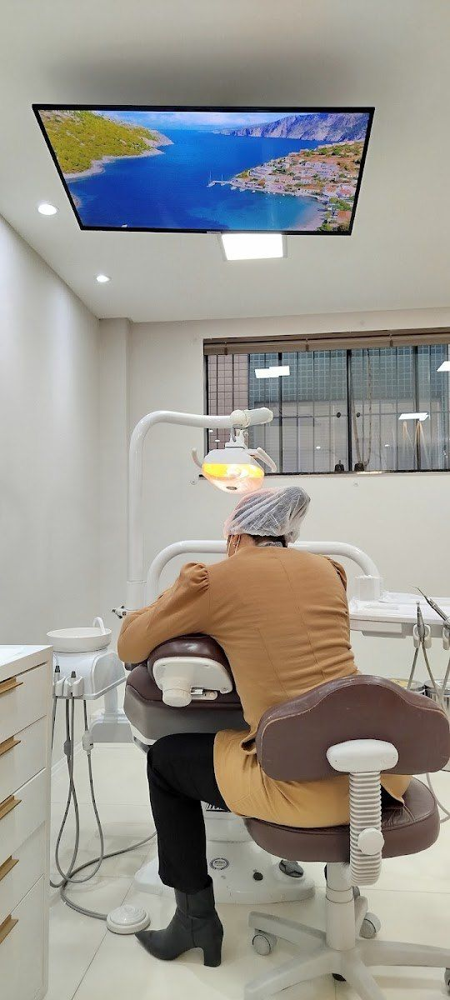
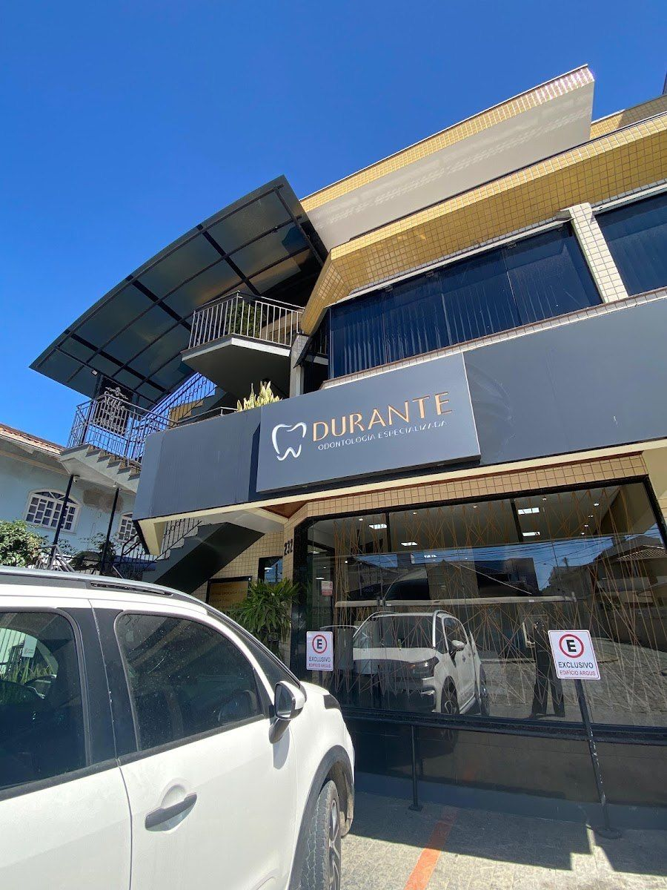

S
Dra. Sabrina Durante da Silva
Sócia-administradora da clínica. A mais citada nas avaliações pelo cuidado e pelas explicações claras.
CRO-SC: a confirmarLentes de contato dental, implantes, alinhadores, odontopediatria e tratamentos do dia a dia, num ambiente pensado para você se sentir em casa.

Lista de tratamentos divulgada pela própria clínica. Toque em cada um para saber mais e já mandar sua dúvida no WhatsApp.
“Ambiente lindo, organizado e adequado para crianças. As recepcionistas foram incriveis (...) Dr Bruna conquistou o Gael, e conseguiu um atendimento calmo, tranquilo e sem choro.”Rayssa L · avaliação no Google · 21/10/2025
Nomes citados pelos pacientes nas avaliações. Especialidades, fotos e registros entram no site oficial com os dados da clínica.
Sócia-administradora da clínica. A mais citada nas avaliações pelo cuidado e pelas explicações claras.
CRO-SC: a confirmarCitada pelas famílias no atendimento às crianças.
CRO-SC: a confirmarCitado por paciente em extração de siso.
CRO-SC: a confirmar


“Desde a primeira consulta, me deixou muito confortável e explicou tudo com muita clareza, transmitindo segurança durante todo o tratamento.”
“Equipe maravilhosa. Ambiente acolhedor, atendimento humanizado e lúdico para as crianças.”
“Aqui eu finalmente encontrei uma clínica que proporciona uma experiência acolhedora.”
A clínica responde pessoalmente às avaliações no Google.
Conte o que você procura e escolha o melhor horário.
Conversa, exame e explicação de cada opção, sem pressa.
Você sai sabendo os próximos passos.
Texto sugerido para a demonstração: a clínica ajusta conforme o atendimento real.